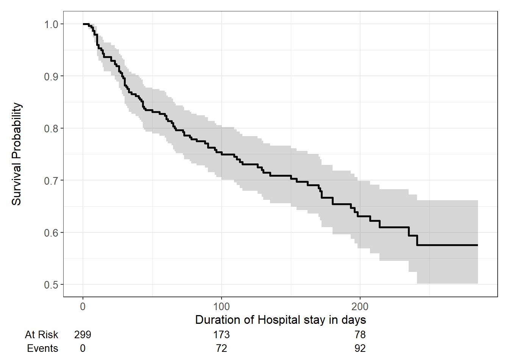
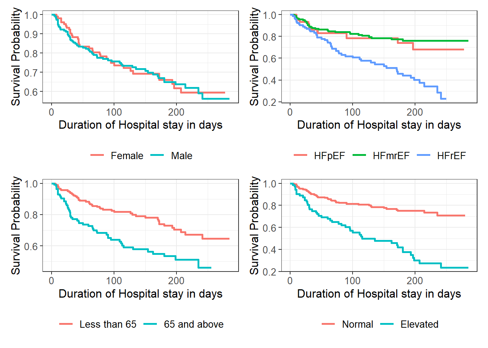

| Characteristic | Classification of Heart Failure According to Ejection Fraction | |||
|---|---|---|---|---|
| Overall, N = 2991 | HFpEF, N = 601 | HFmrEF, N = 1461 | HFrEF, N = 931 | |
| Age(years) | ||||
| Less than 65 | 184 (62%) | 32 (53%) | 93 (64%) | 59 (63%) |
| 65 and above | 115 (38%) | 28 (47%) | 53 (36%) | 34 (37%) |
| Sex | 194 (65%) | 32 (53%) | 97 (66%) | 65 (70%) |
| Anaemia | 129 (43%) | 30 (50%) | 56 (38%) | 43 (46%) |
| Serum creatinine | ||||
| Normal | 227 (76%) | 51 (85%) | 116 (79%) | 60 (65%) |
| Elevated | 72 (24%) | 9 (15%) | 30 (21%) | 33 (35%) |
| Diabetes | 125 (42%) | 24 (40%) | 63 (43%) | 38 (41%) |
| Smoking | 96 (32%) | 15 (25%) | 49 (34%) | 32 (34%) |
| Hypertension | 105 (35%) | 24 (40%) | 47 (32%) | 34 (37%) |
| Sodium | ||||
| Normal | 214 (72%) | 46 (77%) | 107 (73%) | 61 (66%) |
| High | 2 (0.7%) | 2 (3.3%) | 0 (0%) | 0 (0%) |
| Low | 83 (28%) | 12 (20%) | 39 (27%) | 32 (34%) |
| Platelets | ||||
| Normal | 259 (87%) | 50 (83%) | 130 (89%) | 79 (85%) |
| High | 13 (4.3%) | 5 (8.3%) | 4 (2.7%) | 4 (4.3%) |
| Low | 27 (9.0%) | 5 (8.3%) | 12 (8.2%) | 10 (11%) |
| 1 mean(sd) for continuous ;n(%) for categorical | ||||
PREDICTORS OF MORTALITY AMONG HOSPITALIZED HEART FAILURE PATIENTS
Methods and Results section
Statement of Research Objective
The objective of this research is to examine the mortality risk factors among heart failure patients admitted at the Institute of Cardiology and Allied Hospital in Faisalabad, Pakistan.
Methods
Study Population
This analysis was conducted using data from the medical records of 299 heart failure patients collected at the Faisalabad Institute of Cardiology and at the Allied Hospital in Faisalabad (Punjab, Pakistan), during April–December 2015 . The patients consisted of 105 women and 194 men, and their ages range between 40 and 95 years old. All 299 patients had left ventricular systolic dysfunction confirmed by echocardiography and had previous heart failures that put them in classes III or IV of New York Heart Association (NYHA) classification of the stages of heart failure . Demographic data,physical examination data and laboratory investigation data were all extracted from the the medical records of the patients.
Measures
All the measures for this study including demographic data,physical examination data and laboratory investigation data were all extracted from the the medical records of the patients.The primary outcome of interest was time to death constructed as the number of days between patient admission and death.Sex was dichotomized as “Male” or “Female”,Age in years was analyzed as a categorical variable split into two categories of “Less than 65” and “65 and above”.Smoking,Anameia(haematocrit less than 36%),Diabetes,Hypertension status were dichotomized as “Yes” or “No”.Ejection fraction(EF) was divided into three categories of “HFrEF”,“HFmrEF”,“HFpEF” based on whether the patient had a reduced ejection fraction( EF less than 30%),moderately reduced ejection fraction(EF between 30% and 45%) and preserved ejection fraction(EF greater than 45%) respectively.Serum creatinine,a measure of renal function was categorized into “Elevated” indicating renal dysfunction and “Normal” using a cutoff of 1.5mg/dl.Platelet count was categorised as “Low” (platelets count less than 150,000/dl),“Normal” (platelets count 150,000/dl to 450,000/dl),“Elevated” (platelets count greater than 450,000/dl).The distribution of the variables are presented in Table 1.
Statistical Analyses
Analyses was performed using the R version 4.3.3. Kaplan Meier(KM) method was used to obtain overall survival and univariate descriptive statistics for survival data including median survival time, and to compare the survival experience for the group of heart failure patients by gender,age category, and ejection fraction category. For multivariable regression analyses,Cox proportional hazards regression models were used to analyze the effects of predictor variables on the time to death.Strength of association was measured in terms of hazard ratios(HRs) and 95% confidence limits.The overall differences between estimated survival curves of patients by sex,age and ejection fraction categories were calculated by the log-rank test.
Results
A total of 299 patients were included in this study.Out of this 194(65%) were males while 105(35%) were female.184(62%) of the patients were less than 65 years old. 93(31%) o f the patients had heart failure with reduced ejection fraction(HFrEF),146(49%) had failure with moderately reduced ejection fraction(HFmrEF) and 60(20%) had heart failure with preserved ejection fraction(HFpEF). Diabetes,hypertension and smoking statuses showed that 125(42%) were diabetic,105(35%) were hypertensive, and 96(32%) were smokers.72(24%) of the patients had renal dysfunction(elevated serum creatinine).The overall distribution and distribution across ejection fraction categories of the variables are as shown in Table 1 below.
The overall survival of the heart failure patients is shown in the Kaplan Meier curve in Figure 1.

Regression Analysis
Univariate and multivariate analyses were performed with cox proportional hazard models. The result of the Univariate Cox Proportional Hazard Model Showing Factors Associated With Mortality Among Hospitalized Heart Failure Patients is shown in Table 2 below. There were a total of 96(32%) deaths from heart failure by the end of the follow up period.Univariate Cox Proportional Hazard Model Showing Factors Associated With Mortality Among Hospitalized Heart Failure Patients.In the univariate cox proportional hazard model,being 65 years and older,elevated serum creatinine,hypertension, sodium level and ejection fraction were associated with increased mortality among hospitalized heart failure patients.
| Characteristic | N | HR1 | 95% CI1 | p-value |
|---|---|---|---|---|
| Age(years) | 299 | <0.001 | ||
| Less than 65 | — | — | ||
| 65 and above | 2.05 | 1.37, 3.07 | ||
| Sex | 299 | 1.01 | 0.67, 1.54 | >0.9 |
| Anaemia | 299 | 1.40 | 0.94, 2.09 | 0.10 |
| Serum creatinine | 299 | <0.001 | ||
| Normal | — | — | ||
| Elevated | 3.35 | 2.24, 5.00 | ||
| Diabetes | 299 | 0.96 | 0.64, 1.44 | 0.8 |
| Smoking | 299 | 0.99 | 0.64, 1.53 | >0.9 |
| Hypertension | 299 | 1.55 | 1.03, 2.33 | 0.041 |
| Sodium | 299 | <0.001 | ||
| Normal | — | — | ||
| High | 2.08 | 0.29, 15.0 | ||
| Low | 2.23 | 1.49, 3.35 | ||
| Platelets | 299 | 0.7 | ||
| Normal | — | — | ||
| High | 1.18 | 0.48, 2.91 | ||
| Low | 1.28 | 0.68, 2.40 | ||
| Ejection fraction | 299 | <0.001 | ||
| HFpEF | — | — | ||
| HFmrEF | 0.77 | 0.41, 1.45 | ||
| HFrEF | 2.45 | 1.36, 4.43 | ||
| Time_days | 299 | 0.00 | 0.00, 0.15 | <0.001 |
| DEATH_EVENT | 299 | 4,722,950,554 | 0.00, Inf | <0.001 |
| 1 HR = Hazard Ratio, CI = Confidence Interval | ||||
After adjusting for all variables in the multivariable cox proportional hazard model, patients being aged 65 years and older[adjusted hazard ratio HR = 2.18(95% CI 1.42, 3.36,pvalue < 0.001)], renal dysfunction(elevated serum creatinine)[HR = 2.49(95% CI 1.58,3.93, pvalue < 0.001)], reduced ejection fraction[HR = 2.04(95% CI 1.06,3.90, pvalue < 0.001)] were the significant attributes that increased mortality among hospitalized heart failure patients.Highest hazard of death was observed among patients with renal dysfunction[HR = 2.49(95% CI 1.58,3.93, pvalue < 0.001)]. Full results are shown in Table 3 below.The proportional hazards assumptions were visibly checked with plots of Schonfield residuals.The plot for each covariate was approximately horizontal indicating that the proportional hazard assumption was valid.
| Characteristic | HR1 | 95% CI1 | p-value |
|---|---|---|---|
| Age(years) | <0.001 | ||
| Less than 65 | — | — | |
| 65 and above | 2.18 | 1.42, 3.36 | |
| Sex | 0.88 | 0.54, 1.42 | 0.6 |
| Platelets | 0.6 | ||
| Normal | — | — | |
| High | 0.91 | 0.35, 2.35 | |
| Low | 1.39 | 0.72, 2.68 | |
| Anaemia | 1.53 | 1.00, 2.33 | 0.050 |
| Sodium | 0.2 | ||
| Normal | — | — | |
| High | 2.17 | 0.27, 17.4 | |
| Low | 1.47 | 0.93, 2.33 | |
| Diabetes | 1.17 | 0.76, 1.81 | 0.5 |
| Smoking | 1.18 | 0.71, 1.95 | 0.5 |
| Serum creatinine | <0.001 | ||
| Normal | — | — | |
| Elevated | 2.49 | 1.58, 3.93 | |
| Ejection fraction | <0.001 | ||
| HFpEF | — | — | |
| HFmrEF | 0.86 | 0.44, 1.67 | |
| HFrEF | 2.04 | 1.06, 3.90 | |
| Hypertension | 1.51 | 0.99, 2.30 | 0.059 |
| 1 HR = Hazard Ratio, CI = Confidence Interval | |||
Kaplan Meier(KM) curves constructed to examine the overall survival probabilities among sexes,ejection fraction categories,age categories and serum creatinine(renal dysfunction) categories.Log rank tests were performed to examine differences in overall survival.There was no difference in overall survival among the sexes(pvalue = 0.9). Patients with reduced ejection fraction(pvalue = 2e-07),patients aged 65 years and above(pvalue = 0.003) and patients with elevated serum creatinine(pvalue = 4e-10) had a significant decrease in survival.

References
1)Ahmad, T., Munir, A., Bhatti, S. H., Aftab, M., & Raza, M. A. (Year). Survival analysis of heart failure patients: A case study. Department of Statistics, Government College University, Faisalabad, Pakistan.
2)Vittinghoff, E., Glidden, D. V., Shiboski, S. C., & McCulloch, C. E. (2012). Regression Methods in Biostatistics: Linear, Logistic, Survival, and Repeated Measures Models (2nd ed.). Springer.
3)In, J., & Lee, D. K. (Year). Survival analysis: Part I — analysis of time-to-event. Department of Anesthesiology and Pain Medicine, Dongguk University Ilsan Hospital, Goyang, Guro Hospital, Korea University School of Medicine, Seoul, Korea.